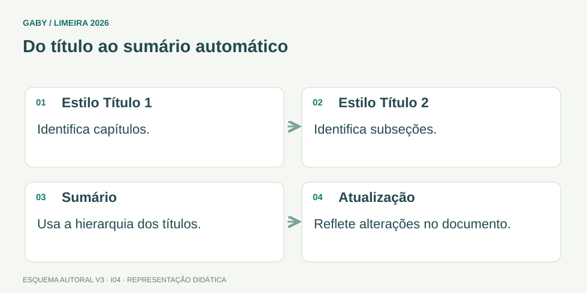

Objetivos do módulo
- Manipular tabelas e quebras de página/seção.
- Entender numeração, legendas e índices.
- Reconhecer objetos, campos e caixas de texto.
Do título ao sumário automático

Descrição em texto do esquema
- Estilo Título 1: Identifica capítulos.
- Estilo Título 2: Identifica subseções.
- Sumário: Usa a hierarquia dos títulos.
- Atualização: Reflete alterações no documento.
Oficina visual · aplique o esquema
Você mudou o nome de um capítulo e o sumário continua igual. Que procedimento deve verificar?
Atividade autoral complementar da V3. Registre sua resposta; a resolução está no arquivo de gabarito e revisão.
Mapa do conteúdo
1. Tabelas
Tabelas são compostas por linhas, colunas e células. É possível inserir/excluir linhas e colunas, mesclar/dividir células, ajustar largura, alinhar conteúdo e aplicar estilos. Tabela não é planilha completa: embora possa fazer cálculos simples, o Excel é mais adequado para análise numérica.
2. Quebra de página x seção
Quebra de página força conteúdo seguinte para nova página. Quebra de seção cria uma nova seção que pode ter margens, orientação, cabeçalho/rodapé e numeração diferentes.
3. Numeração e campos
Número de página é normalmente um campo automático, não texto digitado manualmente em cada página. Campos podem exibir data, propriedades e outras informações dinâmicas.
4. Índices e legendas
Sumário automático depende do uso de estilos de título. Legendas identificam figuras/tabelas e podem alimentar índices de ilustrações. A atualização automática depende de campos e estrutura bem aplicada.
5. Objetos e caixas de texto
Imagens, formas, gráficos e caixas de texto são objetos inseridos. O ajuste de texto define como o texto flui em torno do objeto.
Exemplos resolvidos passo a passo
Exemplo 1
Situação: Precisa mudar orientação para paisagem apenas em uma parte do documento.
Exemplo 2
Situação: Quer um sumário que atualize números de páginas.
Pegadinhas e erros frequentes
- Digitar números de página manualmente.
- Confundir quebra de página com quebra de seção.
- Criar sumário manual e esperar atualização automática.
Resumo de prova
- Tabela: linhas, colunas, células.
- Seção permite configurações diferentes.
- Sumário automático usa estilos.
- Numeração pode ser campo.
- Objetos têm ajuste de texto.
Exercícios do módulo
Resolva sem consultar o arquivo de gabarito. As questões são autorais e construídas para treinar os conceitos do edital.
- slide
- campo
- aba
- célula
- Ctrl+C
- comentário
- quebra de seção
- apenas Enter
- insere fórmula
- inicia nova página
- cria nova pasta
- muda idioma
- estilos de títulos
- espaços manuais
- cores aleatórias
- capturas de tela
- apagar imagem
- mudar extensão
- criar senha
- identificar/numeração e descrição
- arquivo externo
- senha
- campo
- imagem raster
- criar macro
- unir células adjacentes
- apagar tabela
- duplicar documento
- objeto que contém texto
- pasta do Windows
- função do Excel
- a senha
- o nome do arquivo
- a impressora padrão
- como o texto se posiciona em relação à imagem
- clipboard
- fórmulas de Excel
- legendas
- atalhos do Windows
Quando terminar, abra Informática 04 - Word - Tabelas, Páginas, Índices e Objetos - Gabarito e Revisão.
Checklist de domínio
- ☐ Manipular tabelas e quebras de página/seção.
- ☐ Entender numeração, legendas e índices.
- ☐ Reconhecer objetos, campos e caixas de texto.
Meta do módulo: 80% ou mais nas questões, sem depender de consulta.
Referências e conteúdos auxiliares
- Microsoft — Adicionar um título a um documento do WordEstilos de título e estrutura do documento para navegação e sumário.
- Microsoft — Formatar seu documento do WordComandos de formatação; a interface depende da edição e do dispositivo.
Referências externas de apoio consultadas para a V3 em 27/09/2026. A origem das questões é o material autoral do projeto; estes links não indicam que uma instituição publicou ou validou os exercícios. As páginas externas precisam de internet. Em informática, confira a versão do programa; em legislação, observe o recorte e as regras de atualização do edital.